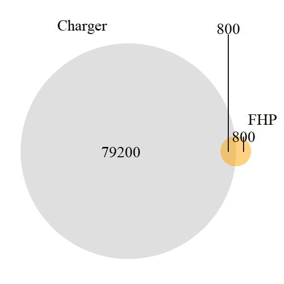

22 exercises
22.2 categorical probability and Venn diagrams
22.2.0.1 Dodge Chargers and FHP Cruisers
In 2024, the Florida Highway Patrol won a national competition for “best looking cruiser.” The winning car was a Dodge Charger.
Not all FHP cruisers are Dodge Chargers, but some are. Assume that there are 8 million registered cars in Florida, that all cars (including all FHP cruisers) are registered, and that 80,000 of these (or 1% of all cars) are Dodge Chargers.
On the basis of the above information, if you see a Dodge Charger on the road, can you compute the probability that it is an FHP cruiser (i.e., P(FHP cruiser | Dodge Charger)?
If you can compute this, what is the probability? If you cannot compute this, what is the minimum additional information would you need to compute this probability (P(FHP cruiser | Dodge Charger)?
Provide a reasonable estimate of this additional value, then compute (P(FHP cruiser | Dodge Charger).
Working with your own numbers, what is P(Dodge Charger | FHP cruiser)?
How confident are you in these results? Are there any additional assumptions that you might make that would make you more confident about your results?
Let A = P(FHP cruiser) B = P(Dodge Charger)
“not yet.”
Rule 4 gives us P(A|B) = P(A and B)/P(B)
We have P(B) = .01 (80,000 / 8,000,000). We don’t have P(A and B): We need to know how many FHP Dodge Chargers there are out of the 8 million cars in Florida.We will estimate the number of FHP Dodge Chargers as 800, or .0001 of the cars on the road.1
So, P(A|B) = P(A and B)/P(B) = .0001/.01 = .01.
That is, 1% of the Dodge Chargers on the road are FHP.Here, we want the reverse probability P(B|A) [p(Dodge Charger | FHP cruiser)].
We can use rule 4 again, just flipping around A and B:
P(B|A) = P(A and B) / P(A) - but we first need to know the number of FHP Cruisers. This is the other missing number. We’ll estimate 1,600.2
So P(A) = 1,600/8,000,000 = .0002
So, P(B|A) = P(A and B)/P(A) = .0001/.0002 = .5.
That is, half of 1% of the FHP cars on the road are Dodge Chargers.Actually, we have been working with the number of registered cars - not the number that’s likely to be on the road at a given time. For this, FHP cruisers would need to be on the road with the same frequency as other vehicles - I’m guessing that they aren’t.
22.2.0.2 (Asymmetrical) Venn Diagrams in R
Problems about probability are often easier if we draw Venn diagrams.
Sketch out a Venn Diagram that accurately reflects the relationships you described in exercise 9.1.
Use R to generate your Venn Diagram.
Look at your figure. In general, if P(A|B) < P(B|A), what must be true of the relationship of P(A) to P(B)?
## Loading required package: grid## Loading required package: futile.loggerlibrary(grid)
# Create first Venn diagram
venn1 <- draw.pairwise.venn(
area1 = 80000,
area2 = 1600,
cross.area = 800,
category = c("Charger", "FHP"),
fill = c("gray", "orange"),
lty = "blank",
cex = 1,#1.5,
cat.cex = 1,
cat.pos = c(-20, 40),
cat.dist = 0.05,
ind = FALSE
)
# To print Venn1, you need to wrap the figure using the grid package. The push and popViewport commands set the margins so it works right.
grid.newpage()
pushViewport(viewport(x = 0.5, y = 0.5, width = 0.9, height = 0.9))
grid.draw(venn1)
popViewport()
Here, P(A|B) is 800/1600 or .5, and P(B|A) is 800/80000 or .01.
If the base rate of A is greater than that of B, and there is at least some overlap, then P(A|B) > P(B|A).
22.3 more on bibliometrics: Combining network analysis with simple text analysis
These analyses extend on the material in chapter 23 on bibliometrics.
As with the network visualizations, we use a tidy approach to text as well.
##
## Attaching package: 'kableExtra'## The following object is masked from 'package:dplyr':
##
## group_rows22.3.1 first analysis: what are the top papers in each community (module) of the network?
We begin by reading in the data on the nodes in the network, which includes the text of the papers (abstracts, titles, and keywords), as well as their position in the network (degree, page rank) and their community (modularity class). We then filter out unconnected papers and small communities. Finally, we list the three highest page rank papers in each of the larger communities.
allNodes <- read_csv(file.path(dataDir,"CSSNodesText.csv"),
col_types = cols()) %>%
select(Label = name,
alltext,
TI,
modularity_class = communityLouv,
page_rank=centralPR,
Degree=central0D)
#
# get rid of unconnected papers
mostNodes <- allNodes %>%
filter (Degree > 0) %>%
group_by(modularity_class) %>%
mutate(moduleSize = n()) %>%
ungroup() %>%
# and communities with < 40 or so papers
filter(moduleSize > (.05*nrow(allNodes)))
mostNodes %>%
select(Label, TI, modularity_class, page_rank) %>%
group_by(modularity_class) %>%
mutate(rank = rank(page_rank)) %>%
ungroup() %>%
filter(rank < 4) %>%
arrange(modularity_class, rank) %>%
kable (caption = "Three highest PR papers in top communities in core bibliometric network") %>%
kable_styling()| Label | TI | modularity_class | page_rank | rank |
|---|---|---|---|---|
| ROESSLER J, 2021 | MEASURING HAPPINESS INCREASES HAPPINESS | 1 | 0.0002103 | 1 |
| LOKANAN ME, 2023 | INCORPORATING MACHINE LEARNING IN DISPUTE RESOLUTION AND SETTLEMENT PROCESS FOR FINANCIAL FRAUD | 1 | 0.0002166 | 2 |
| CHEN JH, 2018 | AN AI-BASED APPROACH TO AUTO-ANALYZING HISTORICAL HANDWRITTEN BUSINESS DOCUMENTS: AS APPLIED TO THE KANEBO DATABASE | 1 | 0.0002179 | 3 |
| SAXON J, 2022 | AN OPEN SOFTWARE ENVIRONMENT TO MAKE SPATIAL ACCESS METRICS MORE ACCESSIBLE | 2 | 0.0001989 | 1 |
| MCKELVEY F, 2022 | WHEN THE NEW MAGIC WAS NEW: THE CLARITAS CORPORATION AND THE CLUSTERING OF AMERICA | 2 | 0.0002314 | 2 |
| LA CORTE 2023 | “CLASSIFYING D/S PROFILES WITHOUT PRIOR ASSUMPTIONS: AN APPLICATION OF CLUSTER ANALYSIS TO SOCIAL DATA” | 2 | 0.0002389 | 3 |
| ZHOU ZM, 2017 | THE IMPACTS OF TECHNICAL PROGRESS ON SULFUR DIOXIDE KUZNETS CURVE IN CHINA: A SPATIAL PANEL DATA APPROACH | 3 | 0.0002006 | 1 |
| ALCANIZ I, 2020 | A SURVEY EXPERIMENT ON “BAD BOSSES”: THE EFFECT OF SOCIAL NETWORKS ON GENDER SOLIDARITY | 3 | 0.0002480 | 2 |
| NETO JPJ, 2021 | THE LEVEL OF TOLERANCE OF INDIVIDUALS, INDIVIDUAL THINKING, AND THE FORMATION OF SOCIAL NORMS | 3 | 0.0002503 | 3 |
| BUKAR UA, 2022 | HOW SOCIAL MEDIA CRISIS RESPONSE AND SOCIAL INTERACTION IS HELPING PEOPLE RECOVER FROM COVID-19: AN EMPIRICAL INVESTIGATION | 4 | 0.0002387 | 1 |
| MUNZERT S, 2022 | WHO’S CHEATING ON YOUR SURVEY? A DETECTION APPROACH WITH DIGITAL TRACE DATA | 4 | 0.0002437 | 2 |
| LANGGUTH J, 2023 | COCO: AN ANNOTATED TWITTER DATASET OF COVID-19 CONSPIRACY THEORIES | 4 | 0.0002556 | 3 |
| NODA I, 2018 | ROADMAP AND RESEARCH ISSUES OF MULTIAGENT SOCIAL SIMULATION USING HIGH-PERFORMANCE COMPUTING | 5 | 0.0002107 | 1 |
| TALUKDAR D, 2020 | IMPACT OF WARS ON THE EVOLUTION OF CIVILIZATIONS | 5 | 0.0002260 | 2 |
| BANKES S, 2002 | MAKING COMPUTATIONAL SOCIAL SCIENCE EFFECTIVE - EPISTEMOLOGY, METHODOLOGY, AND TECHNOLOGY | 5 | 0.0002336 | 3 |
22.3.3 third analysis: How does the language of different communities differ?
Here we identify the characteristic language (in abstracts, titles, and keywords) of each of the larger communities. The first chunk unravels the data into a tall tibble of individual words. (Again, stopwords are not dropped). Next, the tall data is reduced to a set of counts, then the word-counts are compared for the individual communities.
# the text of each paper is represented as a vector of words
oneGrams <- mostNodes %>%
unnest_tokens(word, alltext) %>%
filter(!grepl('[0-9]', word))
# filter(is.na(as.numeric(word)))
# get overall counts of different words
oneGramAllCounts <-
oneGrams %>%
count(word, sort = TRUE) %>%
ungroup()
head(oneGramAllCounts,3)## # A tibble: 3 × 2
## word n
## <chr> <int>
## 1 the 7381
## 2 of 6196
## 3 and 5265# get counts of words for each group
oneGramCommCounts <-
oneGrams %>%
group_by(modularity_class) %>%
count(word, sort = TRUE) %>%
ungroup() Now we combine the overall counts with the group counts, and we drop words that appear only a few times in the data (these are often names or neologisms found in just one source). This gets us the number of words (tokens) per group. We then do another join to permit the tf/idf calculation - this tells us how much a word is chharacteristic of a particular community, relative to the overall dataset.
Finally, we list the top 25 terms in each community.
# combine the overall counts with the group counts
mostNodessumCount <- left_join(oneGramCommCounts,
oneGramAllCounts,
by="word",
suffix = c("Comm",
"Total")) %>%
# we drop words that appear only a few times in the data
# these are often names or neologisms found in just one source
filter(nTotal > 3)
# this gets number of words (tokens) per group
mostNodesTotalWords <- mostNodessumCount %>%
group_by(modularity_class) %>%
mutate(total = sum(nComm))
# again a join to permit the tf/idf
CSStfIdf <- left_join(mostNodessumCount,
mostNodesTotalWords) %>%
bind_tf_idf(word,modularity_class,nComm) ## Joining with `by = join_by(modularity_class, word, nComm, nTotal)`# and a listing of the top 25 terms in each
CSStfIdf %>%
arrange(desc(tf_idf)) %>%
group_by(modularity_class) %>%
top_n(25) %>%
select(word, modularity_class) %>%
aggregate(word ~ modularity_class,
FUN = paste,
collapse = ", ") %>%
kable() %>%
kable_styling(position = "left",
bootstrap_options = "striped",
font_size = 14)## Selecting by tf_idf| modularity_class | word |
|---|---|
| 1 | personality, denoting, news, reviews, names, sentiment, abuse, race, trained, parliament, racism, wildfire, judgments, sentiments, brand, nlp, soft, coding, dictionary, food, forum, vocabulary, annotation, persuasive, covid |
| 2 | border, photos, medoids, ses, phone, capitalism, concentrations, flickr, sociomaterial, ethical, attendees, bioethics, bitcoin, eurovision, routines, ssr, disorder, trading, crime, google, churn, wikipedia, ethics, entertainment, crowdfunding, deviations, engels’s, influenza, streets |
| 3 | career, gbv, intermedia, prizes, cascade, favoritism, forgetting, cascading, passion, cgm, dispensaries, equilibrium, mpl, connectivity, nodes, diffusion, enmity, hiring, mentorship, performers, prizewinning, punishment, dating, friendship, monetary |
| 4 | bots, misinformation, news, propaganda, redistricting, republicans, bot, infodemic, outrage, anger, cheating, conspiracy, covid, dissent, district, clickbait, hong, kong, spr, repression, suicide, partisanship, candidates, factionalism, liberal, termination, witness |
| 5 | mason, creativity, schelling, abms, civilizations, devil’s, intentional, slavery, evolutionary, groupthink, nursing, trafficking, arousal, attractor, disenfranchisement, ec, groundwater, instruction, npd, d, air, program, abm, approximation, criterion, docking, evoplex, ignorance, pastoralist, rebeland, seated |
22.4 a few thoughts
We’ve used bibliometric data, network analysis, and text analysis to address the question of “what is computational social science?” How far have we gotten? Can, in principle, an empirical approach to the nature of “computational social science (CSS)” tell us what it is? How useful is bibliometric data? What other data sources might one use?
What are the biggest weaknesses you see in these analyses? How would you name the communities (or would you)?
Microsoft Copilot estimates this number as between 100 and 300. Claude estimates 800 to 1200. The midpoints of these are 200 and 1000; we’ll guess 800 (600 might be better, but 800 makes the math easier here, and we are really speculating).↩︎
Claude (“1,400-1,600”) and CoPilot (“several thousand”) are in relative agreement here.↩︎